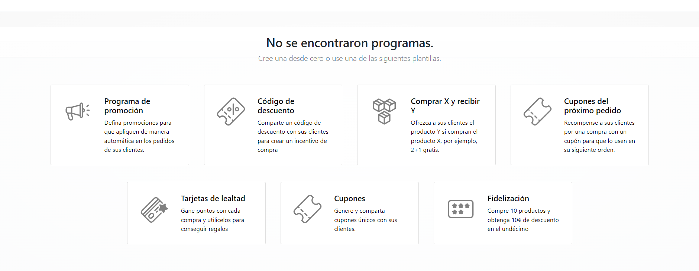

Programas de descuento y lealtad¶
Las aplicaciones Ventas, Comercio electrónico y Punto de venta de Odoo permiten que los usuarios creen programas de descuento y lealtad que los clientes pueden utilizar para comprar en línea y en la tienda. Estos programas ofrecen opciones de precios más variadas, públicas y con distintos plazos que las listas de precios.
Configurar ajustes¶
Para comenzar a usar los programas de descuento y lealtad, vaya a . En la sección de Precio active el ajuste Descuentos y tarjetas de lealtad y regalo marcando la casilla junto a la función. Por último, haga clic en guardar los cambios.
Configurar programas de descuento y lealtad¶
Para crear programas de descuento y lealtad, vaya a .
Si aún no ha creado programas de descuento o lealtad, Odoo ofrece una varias plantillas para ayudar a crear el primero. Seleccione una de las tarjetas de plantilla o haga clic en Nuevo para crear un programa desde cero.
O si ya existen algunos programas, elija uno para editarlo.
Nota
Las plantillas solo aparecen cuando no ha creado programas y desaparecen una vez que crea el primero.
Crear o editar un programa abre el formulario de programa.
El formulario del programa incluye las siguientes opciones:
Nombre del programa: escriba el nombre del programa, el cliente no puede verlo.
Tipo de programa: seleccione el tipo de programa deseado.
Divisa: seleccione la divisa que se utilizará para el programa.
Unidad de puntos: escriba el nombre de los puntos que se utilizan en el programa de tarjetas de lealtad (por ejemplo,
Puntos de lealtad). El nombre de la unidad de puntos es visible para el cliente. Este campo solo está disponible cuando el Tipo de programa es Tarjetas de lealtad.Validez: seleccione la fecha hasta la cual el programa es válido. Deje este campo vacío para que este programa no tenga una fecha de vencimiento, es decir, para que siempre sea válido.
Límite de uso: marque esta casilla y escriba un número para limitar el número de veces que el programa puede usarse durante el período de validez.
Empresa: en caso de que existan varias empresas, elija en cual está disponible el programa.
Disponible en: seleccione las aplicaciones en las que está disponible el programa.
Sitio web: seleccione los sitios web en los que el programa está disponible. Deje este campo vacío para que esté disponible en todos.
Punto de venta: seleccione los puntos de venta en los que el programa está disponible. Deje este campo vacío para que esté disponible en todos.
Nota
Las opciones disponibles en el formulario de programa varían según el tipo de programa seleccionado.
Puede acceder a todas las tarjetas, códigos y cupones que se han generado para el programa mediante el botón inteligente ubicado en la esquina superior derecha del formulario.

Tipos de programa¶
Estos son los distintos tipos de programa disponibles en el formulario del programa:
Cupones: genere y comparta códigos de cupón de un solo uso que proporcionan acceso inmediato a las recompensas.
Cupones para la próxima orden: genere y comparta códigos de cupón de un solo uso que proporcionan acceso a las recompensas en la próxima orden del cliente.
Tarjetas de lealtad: el cliente acumula puntos cuando compra y los puede canjear por recompensas en sus órdenes actuales o futuras.
Promociones: establezca reglas condicionales para ordenar productos, que cuando se cumplan, otorguen acceso a recompensas para el cliente.
Código de descuento: establezca códigos que, cuando se ingresan al momento de finalizar la compra, otorguen descuentos al cliente.
Comprar X y recibir Y: por cada artículo X comprado, el cliente recibe un crédito. Después de acumular una cantidad específica de créditos, el cliente puede intercambiarlos para recibir el artículo Y.
Reglas condicionales¶
Luego, configure las reglas condicionales que determinan cuándo se aplica el programa a la orden de un cliente.
En la pestaña Reglas y recompensas haga clic en Agregar junto a Reglas condicionales para agregar condiciones al programa. Esta acción despliega la ventana emergente de Crear reglas condicionales.

Nota
Las opciones para las reglas condicionales varían según el tipo de programa seleccionado.
Las siguientes opciones están disponibles para configurar las reglas condicionales:
Código de descuento: ingrese un código personalizado que se pueda utilizar en el programa de Código de descuento o use el que Odoo genera de forma predeterminada. Este campo solo está disponible cuando el tipo de programa es Código de descuento.
Cantidad mínima: escriba el número mínimo de productos que deben comprarse para poder acceder a la recompensa. Este debe ser al menos
1para garantizar que para obtenerla, el cliente debe realizar una compra.Compra mínima: escriba la cantidad mínima (en divisa), con impuestos incluidos o impuestos excluidos, que debe gastarse para obtener la recompensa. Si se introduce una cantidad mínima y un importe mínimo de compra, entonces la orden del cliente debe cumplir ambas condiciones.
Productos: Seleccione los productos específicos para los que aplica el programa. Deje este campo vacío para aplicarlo a todos los productos.
Categorías: seleccione la categoría de productos a la que se aplica el programa. Elija Todas para aplicarlo a todas las categorías de productos.
Etiqueta del producto: seleccione una etiqueta para aplicar el programa a los productos con esa etiqueta específica.
Otorgar: escriba el número de puntos que el cliente gana por orden, por importe gastado o por unidad pagada (para los programas Tarjetas de lealtad y Comprar X y obtener Y).
Haga clic en Guardar y cerrar para guardar la regla y cerrar la ventana emergente. También puede hacer clic en Guardar y crear nuevo para guardar la regla y crear una nueva de inmediato.
Recompensas¶
En la pestaña Reglas y recompensas del formulario del programa, haga clic en Agregar junto a Recompensas para agregar recompensas al programa. Esta acción despliega la ventana emergente Crear recompensas.
Nota
Las opciones para otorgar recompensas varían según el tipo de programa seleccionado.
Las siguientes opciones están disponibles para configurar las recompensas:
Tipo de recompensa: seleccione el tipo de recompensa entre Producto gratis, Descuento y Envío gratis, otras opciones dependen del tipo de recompensa seleccionado.
Producto gratis:
Cantidad recompensada: seleccione el número de productos gratuitos que se le otorgarán al cliente.
Producto: seleccione el producto que se otorgará de forma gratuita como recompensa, solo puede elegir uno.
Etiqueta del producto: seleccione una etiqueta para especificar el producto gratuito elegible para la recompensa.
Descuento:
Descuento: Ingrese el importe descontado en porcentaje, divisa por punto o divisa por orden. Después seleccione si el descuento se aplica a toda la :guilabel:orden`, solo al producto más barato en ella o solo a productos específicos.
Descuento máximo: escriba la cantidad máxima (en divisa) que esta recompensa puede conceder como descuento. Deje este campo en
0para que no haya límite.
Envío gratis:
Descuento máximo: escriba la cantidad máxima (en divisa) que esta recompensa puede conceder como descuento. Deje este campo en
0para que no haya límite.
A cambio de: ingrese el número de puntos necesarios para canjear la recompensa (para los programas Tarjetas de lealtad y Comprar X y obtener Y).
Descripción en la orden: escriba la descripción de la recompensa, se le mostrará al cliente cuando finalice su pedido.